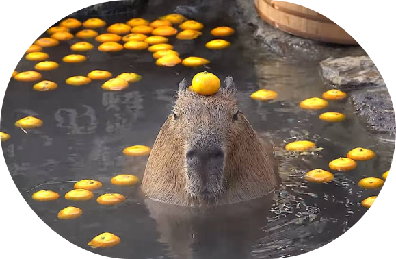
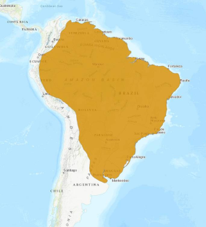
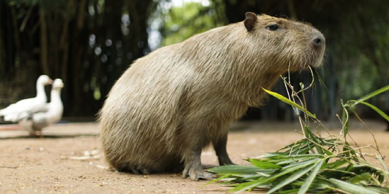

Capybara
Где обитает капибара?
Капибара живет во всех странах Южной Америки, кроме Чили. Обитает по тропической и умеренной частях Южной Америки восточнее Андских гор, от Панамы до северо-востока Аргентины. Сбежавшие из неволи зверьки понемногу обживают и другие континенты. Устойчивая популяция сформировалась на острове Тринидад. В 2010-ых дикие животные также были замечены в Калифорнии и Флориде.
Чем питаются?
Капибара живет во всех странах Южной Америки, кроме Чили. Обитает по тропической и умеренной частях Южной Америки восточнее Андских гор, от Панамы до северо-востока Аргентины. Сбежавшие из неволи зверьки понемногу обживают и другие континенты. Устойчивая популяция сформировалась на острове Тринидад. В 2010-ых дикие животные также были замечены в Калифорнии и Флориде.
